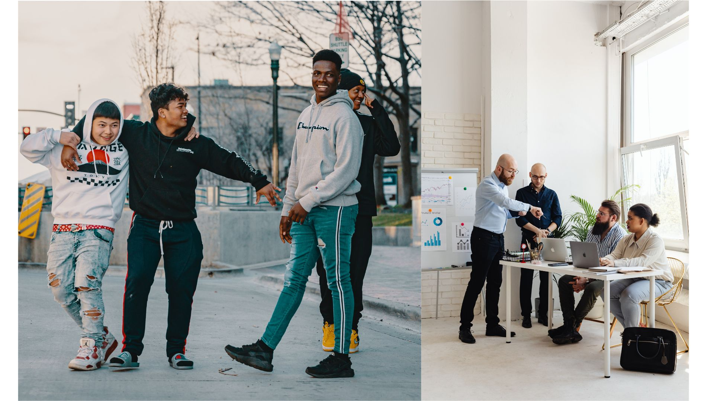

Nossos Projetos
A ONG Linux para Todos promove cursos gratuitos de informática com foco em software livre e Linux, voltados para jovens e adultos de comunidades carentes.
- Curso de Introdução ao Linux: fundamentos do sistema operacional e comandos básicos.
- Montagem e Manutenção de Computadores: aulas práticas de hardware e diagnóstico.
- Programação para Iniciantes: lógica, Python e Shell Script.
- Inclusão Digital Sênior: oficinas de navegação, redes sociais e segurança digital.

Voluntariado
Seja parte da transformação! Nossos voluntários ajudam a ministrar aulas, manter os laboratórios e orientar os alunos durante os cursos.
Ao se cadastrar, você poderá escolher entre diversas áreas de atuação: suporte técnico, ensino, comunicação e captação de recursos.
Como Doar
As doações ajudam a manter os cursos gratuitos e a infraestrutura da ONG. Toda contribuição é bem-vinda e registrada com transparência.
- 💳 Doação Online: via Pix ou cartão de crédito.
- 💻 Doação de Equipamentos: computadores e periféricos usados em bom estado.
- 📦 Parcerias Institucionais: empresas que apoiam financeiramente ou com infraestrutura.